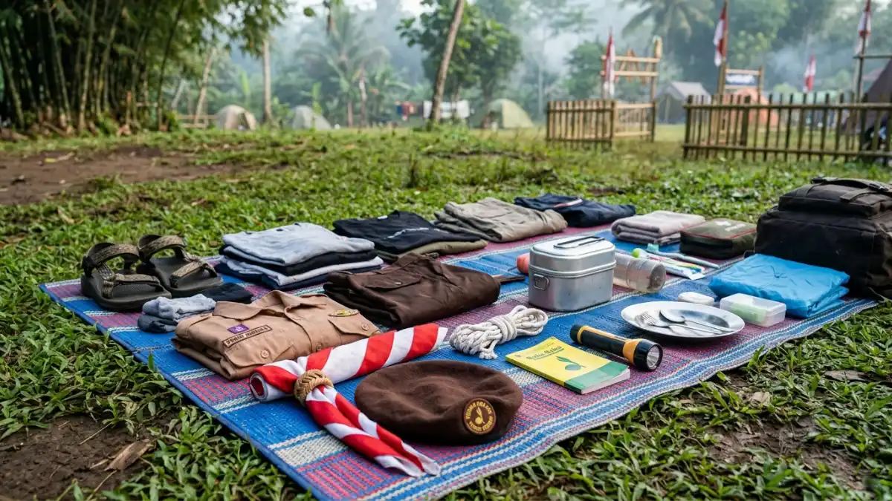
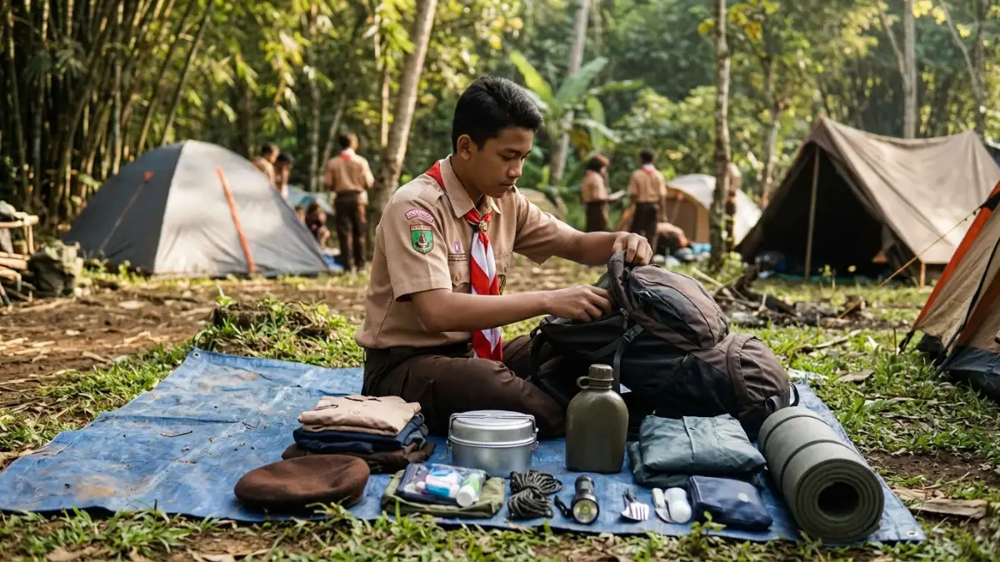

Ilustrasi Contoh perlengkapan pribadi yang perlu disiapkan peserta sebelum kemah pramuka di Lembah Tumpang.Perlengkapan kemah pramuka Lembah Tumpang mencakup barang pribadi, peralatan regu, atribut seragam, kotak P3K, dan perlengkapan kebersihan yang disesuaikan dengan lama kegiatan serta cuaca.
- Perlengkapan dibagi tiga kelompok: pribadi, regu, dan panitia.
- Pakaian ganti, jas hujan, dan alas tidur menjadi prioritas karena cuaca bisa berubah.
- Resort memiliki 6 kolam menurut detikJatim (26 Desember 2023), jadi pakaian ganti ekstra dan aturan berenang perlu disiapkan.
- Barang berharga dan barang berbahaya sebaiknya tidak dibawa.
- Tanyakan pengelola apakah sewa tenda dan peralatan tersedia sebelum membeli atau meminjam.
- Apa Saja Perlengkapan Wajib Kemah Pramuka di Lembah Tumpang?
- Apa Saja Perlengkapan Pribadi yang Harus Dibawa Setiap Peserta?
- Apa Saja Perlengkapan Regu yang Perlu Disiapkan Bersama?
- Apa Saja Atribut Pramuka yang Harus Dibawa?
- Bagaimana Menyiapkan Kotak P3K dan Perlengkapan Kebersihan?
- Barang Apa yang Sebaiknya Tidak Dibawa Saat Kemah?
- Bagaimana Cara Packing Ransel Agar Rapi dan Ringan?
- Apakah Jam Operasional Resort Memengaruhi Persiapan Perlengkapan?
- Apa Kesalahan yang Sering Terjadi Saat Menyiapkan Perlengkapan?
- Kesimpulan
- FAQ
Apa Saja Perlengkapan Wajib Kemah Pramuka di Lembah Tumpang?
Perlengkapan wajib meliputi tenda atau akses tenda regu, alas tidur, pakaian ganti, jas hujan, alat makan, senter, alat mandi, obat pribadi, dan atribut Pramuka lengkap.
Kebutuhan dasar berkemah relatif sama di setiap lokasi, tetapi Lembah Tumpang memiliki fasilitas resort seperti toilet dan area parkir sehingga peserta tidak perlu membawa semua peralatan sanitasi seperti kemah di hutan.
Tetap saja, peserta harus membawa barang yang menjamin kenyamanan tidur, kebersihan, dan keamanan.
Pembina sebaiknya membagikan daftar tertulis beberapa hari sebelum berangkat sehingga orang tua dapat membantu menyiapkan.
Daftar yang jelas mengurangi risiko barang tertinggal dan mencegah peserta membawa barang yang tidak perlu.
Apa Saja Perlengkapan Pribadi yang Harus Dibawa Setiap Peserta?
Perlengkapan pribadi terdiri dari pakaian ganti, seragam dan atribut, perlengkapan mandi, alat makan, botol minum, senter, jas hujan, alas tidur, serta obat pribadi.
Hitung pakaian sesuai jumlah hari, lalu tambah satu setel cadangan karena pakaian bisa basah akibat hujan atau kegiatan air.
Bawa jaket tipis, sebab udara malam di kawasan Tumpang umumnya lebih sejuk daripada siang hari. Sandal ringan dan sepatu tertutup yang nyaman dibutuhkan untuk kegiatan jelajah.
Peralatan mandi cukup yang mendasar: sabun, sikat gigi, pasta gigi, dan handuk. Peserta yang memiliki alergi atau penyakit tertentu wajib membawa obat pribadi dan memberi tahu pembina. Simpan semua barang dalam kantong plastik terpisah agar tetap kering.
Apa Saja Perlengkapan Regu yang Perlu Disiapkan Bersama?
Perlengkapan regu mencakup tenda, tali dan tongkat pionering, peralatan masak, lampu penerangan, bendera regu, terpal, tempat sampah, serta perlengkapan kebersihan.
Pembagian tanggung jawab membuat setiap anggota regu merasa memiliki peran. Pemimpin regu mengoordinasi daftar dan memastikan barang kembali utuh setelah acara.
Tenda dan terpal wajib diperiksa sebelum berangkat, termasuk patok, tali, dan kondisi kain. Jika regu memasak sendiri, siapkan kompor dan perlengkapan makan yang aman.
Bila resort menyediakan layanan konsumsi, bawa saja perlengkapan minimal. Tanyakan kepada pengelola Lembah Tumpang apakah tersedia sewa tenda, listrik, atau tempat memasak, karena ketentuan semacam itu dapat berbeda dari satu periode ke periode lain.
Apa Saja Atribut Pramuka yang Harus Dibawa?
Atribut Pramuka yang dibawa umumnya berupa seragam sesuai golongan, kacu, tali pramuka, topi atau baret, tanda pengenal, papan nama, dan buku kegiatan.
Atribut berperan dalam upacara pembukaan dan penutupan serta menandai identitas gugus depan. Siapkan seragam harian dan seragam upacara bila jadwal mengharuskan.
Pembina sebaiknya memeriksa kelengkapan atribut sebelum berangkat agar tidak ada peserta yang tertinggal. Tuliskan nama peserta pada atribut dan perlengkapan penting untuk menghindari tertukar.
Bagi peserta yang mengikuti pelantikan atau pengukuhan, siapkan pula perlengkapan khusus sesuai ketentuan gugus depan masing-masing.
Bagaimana Menyiapkan Kotak P3K dan Perlengkapan Kebersihan?
Kotak P3K sebaiknya berisi plester, kasa steril, antiseptik, perban elastis, obat luka, minyak angin, termometer, dan obat pribadi, dilengkapi kantong sampah serta sabun cuci tangan.
Satu kotak P3K utama dipegang panitia, sedangkan tiap regu membawa kotak kecil. Periksa tanggal kedaluwarsa setiap isi.
Catat nomor kontak orang tua, pembina, dan fasilitas kesehatan terdekat di selembar kertas yang mudah dijangkau.
Untuk kebersihan, siapkan kantong sampah, sapu lidi, dan sabun cuci tangan, serta bawa kembali seluruh sampah regu ke tempat pembuangan yang ditentukan.
Isi P3K ini bersifat umum. Jika ada peserta dengan kondisi kesehatan khusus, konsultasikan kebutuhan obat kepada tenaga kesehatan.
Barang Apa yang Sebaiknya Tidak Dibawa Saat Kemah?
Barang yang sebaiknya tidak dibawa adalah benda tajam berbahaya, korek atau petasan, perhiasan mahal, uang berlebihan, dan gawai berlebihan yang mengganggu kegiatan.
Aturan ini melindungi peserta dan menjaga fokus kegiatan. Pisau lipat atau gunting kecil dapat dibawa hanya bila panitia mengizinkan dan penggunaannya diawasi. Perhiasan serta uang tunai besar rawan hilang.
Pembina dapat menerapkan kebijakan penitipan gawai pada jam kegiatan tertentu agar peserta fokus.
Makanan berbau menyengat dan minuman bersoda dalam jumlah besar juga kurang cocok, karena menarik serangga dan menambah sampah.
Pastikan aturan tertulis diumumkan sebelum hari keberangkatan, sehingga peserta dan orang tua memahami alasannya.

Ilustrasi Cara packing ransel yang rapi membantu peserta kemah pramuka lebih nyaman selama perjalanan.Bagaimana Cara Packing Ransel Agar Rapi dan Ringan?
Cara packing yang baik adalah menaruh barang berat dekat punggung, pakaian dalam kantong plastik terpisah, barang darurat di bagian atas, dan membawa hanya yang diperlukan.
Susun pakaian per hari dalam kantong terpisah agar mudah diambil. Taruh jas hujan dan senter di bagian paling atas, sebab barang tersebut dibutuhkan mendadak.
Gunakan kantong terpisah untuk pakaian kotor. Hindari membawa ransel yang beratnya melebihi sekitar sepersepuluh bobot tubuh anak, kecuali ada kebutuhan khusus, karena beban berlebihan dapat melelahkan dan meningkatkan risiko cedera.
Peserta dapat berlatih mengemas satu hari sebelum berangkat. Bila perjalanan menggunakan kendaraan dan barang disimpan di bagasi, tetap beri label nama pada setiap tas.
Apakah Jam Operasional Resort Memengaruhi Persiapan Perlengkapan?
Jam operasional memengaruhi waktu tiba, pengambilan tenda, dan konsumsi, sehingga panitia perlu memastikan jam buka resmi yang berlaku sebelum menentukan perlengkapan malam hari.
Sumber publik mencatat jam buka berbeda. detikJatim (26 Desember 2023) menyebut buka setiap hari pukul 07.00-17.00 WIB, sedangkan Liputan6 menyebut pukul 08.00-17.00 WIB.
Perbedaan itu menunjukkan bahwa informasi dapat berubah atau berbeda antarsumber. Untuk kegiatan menginap, panitia perlu menanyakan aturan masuk dan keluar di luar jam kunjungan biasa, termasuk penerangan area kemah pada malam hari.
Dari jawaban pengelola, tentukan apakah perlu menambah senter, lampu tenda, atau perlengkapan penerangan lain.
Apa Kesalahan yang Sering Terjadi Saat Menyiapkan Perlengkapan?
Kesalahan umum meliputi membawa terlalu banyak barang, lupa jas hujan, tidak memberi label nama, tidak memeriksa tenda, dan tidak menyiapkan pakaian ganti cadangan.
Membawa barang berlebihan membuat peserta cepat lelah dan sulit mengurus tas. Lupa jas hujan atau jaket membuat peserta kedinginan bila cuaca berubah.
Tidak memeriksa tenda berisiko membuat atap bocor atau tiang rusak ketika sudah tiba di lokasi. Tidak memberi nama pada barang menyebabkan banyak benda tertukar.
Pembina dapat mengurangi kesalahan ini dengan memberikan checklist, mengadakan pemeriksaan tas sebelum bus berangkat, dan menyiapkan sedikit perlengkapan cadangan, misalnya tali dan terpal tambahan.
Kesimpulan
Bagi perlengkapan menjadi tiga kelompok, yaitu pribadi, regu, dan panitia. Prioritaskan pakaian cadangan, jas hujan, alas tidur, dan P3K.
Konfirmasi jam operasional serta layanan sewa ke pengelola, lalu lakukan pemeriksaan tas sebelum keberangkatan agar kemah berjalan nyaman.
FAQ (Pertanyaan yang Sering Diajukan)